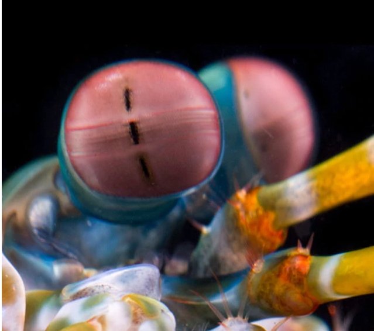
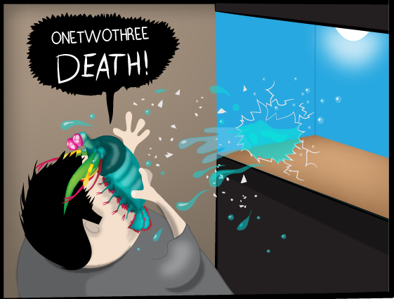

Fatos sobre o Stomatopoda
Detalhes gerais:

Nome científico: Odontodactylus scyllarus
- Reino: Animalia.
- Filo: Arthropoda.
- Subfilo: Crustacea.
- Classe: Malacostraca.
- Subclasse: Hiplocarida.
- Ordem: Stomatopoda Latreille, 1817.
Este é o olho de um Stomatopoda — um animal marinho que não é louva-a-deus nem camarão, mas um parente próximo de caranguejos e lagostas. É um olho composto, feito de milhares de pequenas unidades que detectam a luz de forma independente. Os da banda média - a faixa central que você pode ver na foto - são especiais. São eles que permitem que o animal veja cores.
A maioria das pessoas tem três tipos de células detectoras de luz, ou fotorreceptores, que são sensíveis à luz vermelha, verde e azul. Mas o camarão mantis tem de 12 a 16 fotorreceptores diferentes em sua banda intermediária. A maioria das pessoas assume que deve ser realmente boa em ver uma ampla gama de cores - uma " bomba termonuclear de luz e beleza ", como o Oatmeal colocou.
Eles parecem usar seus mais de uma dúzia de receptores para reconhecer cores de uma maneira única, muito diferente de outros animais, mas estranhamente semelhante a alguns satélites.
A força de um Stomatopoda
Isso, no entanto, não poderia estar mais longe da verdade. A verdade é que o Stomatopoda é um pesadelo submarino e um dos animais mais criativos e violentos da Terra.
Tem dois apêndices raptoriais na frente de seu corpo. Estes aceleram com a velocidade de um tiro de fuzil calibre 22 e em menos de três milésimos de segundo podem atingir a presa com 1.500 Newtons de força. Para colocar isso em perspectiva, se os seres humanos pudessem acelerar nossos braços a 1/10 dessa velocidade, poderíamos lançar uma bola de beisebol em órbita. Seus membros se movem tão rapidamente que a água ao seu redor ferve em um processo conhecido como supercavitação. Quando essas bolhas de cavitação colapsam, produzem uma onda de choque submarina que pode matar a presa, mesmo que o camarão louva-a-deus erre o alvo. A força dessas bolhas em colapso também produz temperaturas na faixa de vários milhares de Kelvins e emite pequenas rajadas de luz. Este efeito é chamado de sonoluminescência.
"Estas são as minhas varas de assassinato." ~ Stomatopoda
"Há muitos como este, mas estes são meus." ~ Stomatopoda
Usando esses "bastões assassinos", o desmembramento é principalmente como o Stomatopoda mata sua presa. Ele esmaga outros animais em pedaços, quebrando caranguejos, moluscos, ostras e polvos até que a delícia comece a esguichar. Seus membros são tão resistentes que os pesquisadores têm estudado sua estrutura celular para uso no desenvolvimento de armaduras avançadas para tropas de combate.

Habitat natural ou Aquários?
Os aquários normalmente não abrigam Stomatopoda porque eles tendem a matar todas as outras criaturas com as quais compartilham um ambiente.
"Olá, senhor belo cavalo-marinho!" ~ Stomatopoda
"Um dois três morte!" ~ Stomatopoda
E também porque podem quebrar o vidro do aquário.
"Olá, Sr... porco... coisa." ~ Stomatopoda
"Um dois três morte!" ~ Stomatopoda

Links de referência bibliográficas:
- "Por que o camarão mantis é meu novo animal favorito" - Quadrinhos
- Stomatopoda - Wikipedia
- Os olhos mais incríveis da natureza ficaram um pouco mais estranhos - National Geographic